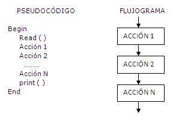
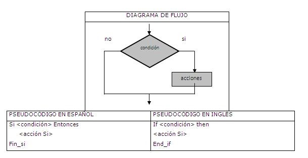
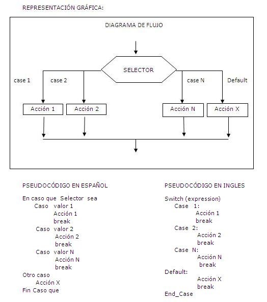
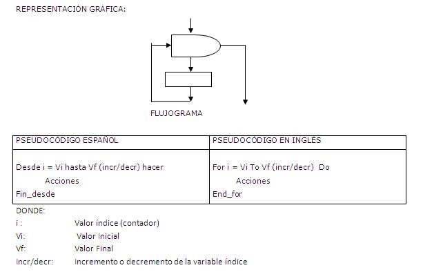
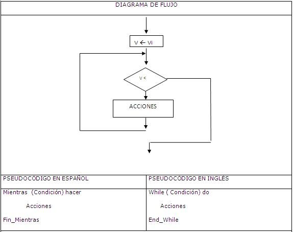
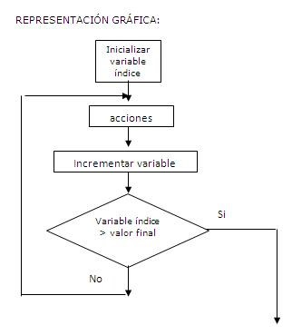

Un problema se puede dividir en acciones elementales o instrucciones, usando un número limitado de estructuras de control (básicas) y sus combinaciones
que pueden servir para resolver dicho problema.
Las estructuras de control de un lenguaje de programación son métodos de especificar el orden en que las instrucciones de un algoritmo se ejecutarán.
Estas son por consiguiente fundamentales en los lenguajes de programación y en los diseños de algoritmos. Se les llama de control debido a que controlan
el modo de ejecución del programa.
Las Estructuras Básicas pueden ser:

Son problemas en los que, para su solución se emplea una serie de acciones ejecutadas invariablemente en un orden secuencial. Las tareas suceden
de tal modo que la salida de una es la entrada de la siguiente y así sucesivamente hasta el fin del proceso.
Dentro de este tipo podemos encontrar operaciones de inicio/fin, inicialización de variables, operaciones de asignación, cálculo, sumarización, etc.
Este tipo de estructura se basa en las 5 fases de que consta todo algoritmo o programa:

Una decisión es la estructura según la cual se puede escoger uno de entre dos caminos lógicos dependiendo de una condición que al ser evaluada nos brinda la
oportunidad de saber cuál de los dos caminos escoger. La evaluación de dicha condición siempre va a originar una respuesta VERDADERA (cuando la condición se
cumple) o FALSA (cuando dicha condición no se cumple) y con ello se podrá saber cuál es el conjunto de instrucciones a resolver.

La Instrucción Switch, es una alternativa a la instrucción if, y se caracteriza por ofrecer la posibilidad de elegir entre más de dos opciones. Pero al igual
que en la instrucción if, el camino a seguir depender del valor que se evalúe. En esta instrucción no existe una condición explícita en su sintaxis, sin
embargo de acuerdo al lenguaje es posible evaluar un carácter o un número, siendo esta una limitación que impide la escritura directa de condiciones; por
lo que es útil en algunos problemas en los que se requiere elegir opciones directas.

La estructura repetitiva For (desde) es aquella en la que el número de iteraciones se conoce por anticipado, y por ello no se precisa poner ninguna condición
de salida para detener el bucle. En su lugar un contador cuenta el número de iteraciones fijas y se termina cuando llega al valor final previamente definido.
Quiere decir que esta estructura se usa frecuentemente cuando se conoce de antemano el número de veces que se ejecutarán las acciones de un bucle. Esta es
una de sus características.

Se llama Mientras a la estructura algorítmica que se ejecuta mientras la condición evaluada resulte verdadera.
Se evalúa la expresión booleana y, si es cierta, se ejecuta la instrucción especificada, llamada el cuerpo del bucle. Entonces se vuelve a evaluar la expresión
booleana, y si todavía es cierta se ejecuta de nuevo el cuerpo. Este proceso de evaluación de la expresión booleana y ejecución del cuerpo se repite mientras la
expresión sea cierta. Cuando se hace falsa, finaliza la repetición.
Si la condición del bucle While se evalúa a falso cuando se ejecuta el bucle por primera vez, el cuerpo del bucle no se ejecutará nunca. En este caso se dice
que el bucle se ha ejecutado cero veces.
La condición lógica en un bucle While, debe tener un valor la primera vez que se evalúa; en caso contrario, el programa abortará al ejecutarse While. La
condición lógica en un bucle While, debe ser modificada por una sentencia en el cuerpo del bucle, normalmente por un contador, en caso contrario, el bucle es
infinito.

Se llama Repetir a la estructura algorítmica que se ejecuta un número definido de veces hasta que la condición se torna verdadera.
Las reglas para construcción de una estructura usando Repeat, nos dicen que debemos declarar una variable contador que debe inicializarse antes del ciclo e
incrementarse dentro del ciclo. A diferencia de la estructura While, la condición ahora estará colocada al final del bucle para que primero ejecutemos la
instrucción y luego preguntamos si la condición se cumple. Esto quiere decir, que en esta estructura el bucle se realizará por lo menos una vez. También
podrá observar que la condición está al revés, porque el bucle se repite hasta que la condición se cumpla. En el bucle While, la condición se evaluaba
mientras era cierta. Hoy en Repeat se evalúa mientras es falsa.
Igual que el bucle While, el bucle repeat puede ser controlado por contador, por condición o por banderas.